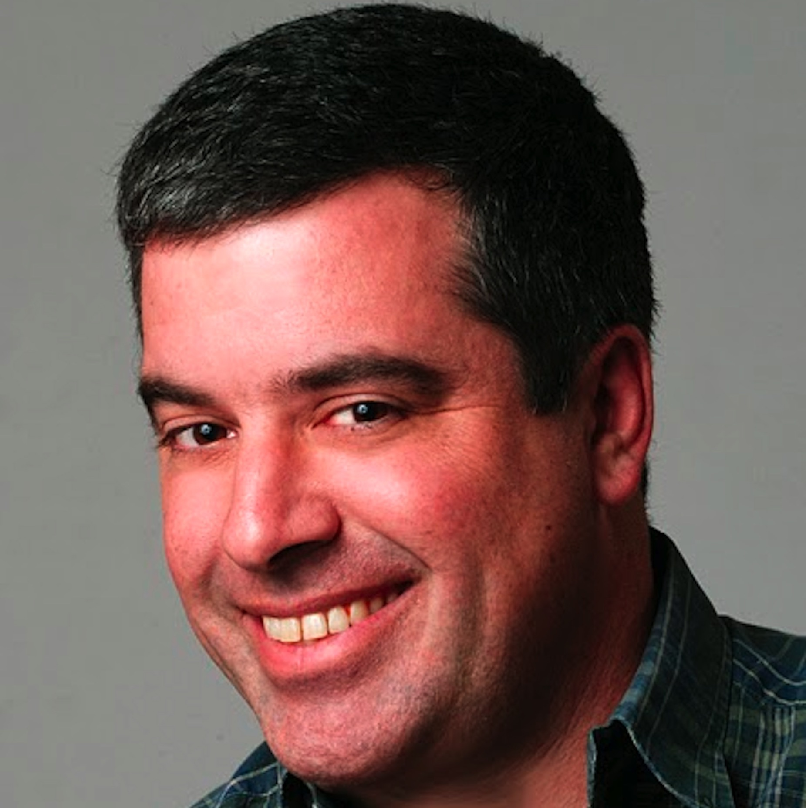

<section id="author-section" class="author-section section theme-bg-primary py-5">
  <div class="container py-3">
    <div class="author-profile text-center mb-5">
      
      
    </div><!--//author-profile-->
    <h2 class="section-heading text-center text-white mb-3">About The Authors</h2>
    <div class="author-bio mx-auto">
      <p>
        <strong>Armando Fox</strong> 
      is a Professor of Computer Science, a Diversity and
      Equity Officer at both the EECS Department level and Campus level,
      and Faculty Advisor for Digital Learning Strategy at UC Berkeley.
      He is an ACM Distinguished Scientist, a winner of the ACM Karl V. Karlstrom Outstanding Educator Award, and the winner of numerous teaching and mentoring awards from 
      Associated
      Students of Stanford University, the Society of Women Engineers, and Tau
      Beta Pi Engineering Honor Society. 
      </p>
      <p>
      <strong>David Patterson</strong>
      recently retired from a 40-year career at UC Berkeley.  He is
      the co-inventor of RISC and RAID; a member of the National
      Academy of Engineering, National Academy of Sciences, and Silicon
      Valley Hall of Fame; and the winner of the ACM Karl V. Karlstrom
      Outstanding Educator Award, the IEEE Mulligan Medal for Education, numerous
      teaching awards from UC Berkeley, and most recently, the ACM
      A.M. Turing Award, shared with John Hennessy.
      </p>
      
    </div><!--//author-bio-->
    
  </div><!--//container-->
</section><!--//author-section-->

